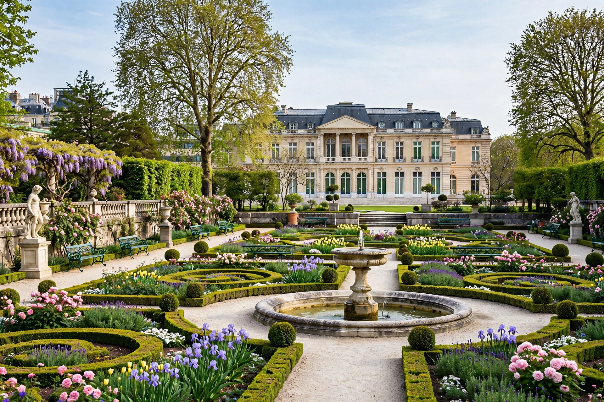

From Wikipedia, the free encyclopedia
| Organisation for Economic Co-operation and Development | |
| Abbreviation | OECD; OCDE (French) |
|---|---|
| Founded | 30 September 1961 (convention signed 14 December 1960) |
| Predecessor | Organisation for European Economic Co-operation (OEEC, 1948) |
| Headquarters | Château de la Muette, Paris, France |
| Membership | 38 member countries |
| Secretary-General | Mathias Cormann (since 2021) |
| Purpose | Economic policy co-operation, statistics, and standards among democracies with market economies |

The Organisation for Economic Co-operation and Development (OECD; French: Organisation de coopération et de développement économiques, OCDE) is an intergovernmental organisation of 38 member countries, founded in 1961 to stimulate economic progress and world trade. It is a forum of countries describing themselves as committed to democracy and the market economy, providing a platform to compare policy experiences, seek answers to common problems, identify good practices, and co-ordinate domestic and international policies. Members together account for a majority of global GDP and trade.
The OECD grew out of the Organisation for European Economic Co-operation (OEEC), formed in 1948 to administer the American Marshall Plan for the reconstruction of postwar Europe. With the United States and Canada joining the European members, the OECD Convention was signed in December 1960 and took effect on 30 September 1961, broadening the remit from reconstruction to global economic co-operation. Japan joined in 1964, and membership later widened to include Mexico (1994), South Korea (1996), former communist states of Eastern Europe, and — in 2020–21 — Colombia and Costa Rica, the most recent members. Accession talks with Russia were suspended in 2014 and terminated in 2022 after the invasion of Ukraine; Russia's participation in OECD bodies was cancelled.
The OECD is best known for its comparable statistics and economic analysis: the twice-yearly Economic Outlook, country surveys, the Programme for International Student Assessment (PISA) of school systems, and indicators such as the Better Life Index. Its "soft law" instruments have hardened into global rules in several fields — notably the OECD/G20 Base Erosion and Profit Shifting (BEPS) project on corporate tax avoidance, which produced the global minimum corporate tax agreement of 2021; the Anti-Bribery Convention (1997); the Model Tax Convention; and guidelines for multinational enterprises. Specialised bodies include the International Energy Agency (IEA, founded 1974 as an autonomous OECD agency) and the Nuclear Energy Agency.
Supreme authority rests with the Council of ministers and ambassadors of member states; day-to-day work is done by a Paris secretariat of some 3,000 staff organised into directorates and roughly 300 committees of national officials, whose peer-review method — mutual examination and pressure — is the organisation's signature governance style. The budget (about €200 million annually in recent years) is funded by member contributions scaled to the size of their economies, with the United States the largest contributor. The Secretary-General since June 2021 is Mathias Cormann of Australia.